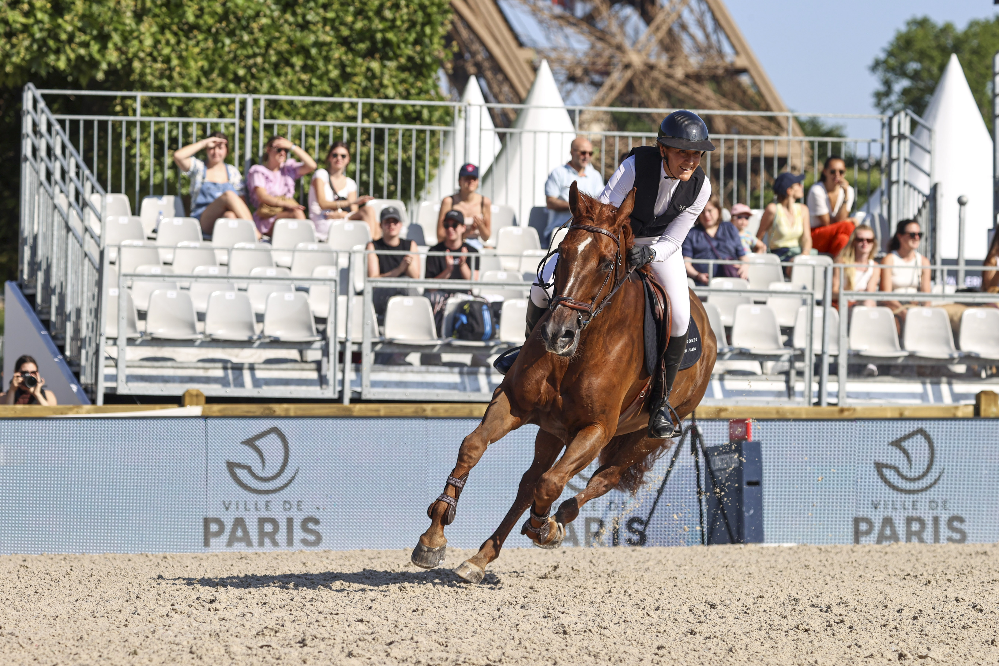

De Lanaken a Le Lion d'Angers: los mundiales de jóvenes caballos que validan la cría FEI
El ciclo de la cría del caballo de deporte europeo no se cierra en la *körung*. Tras la aprobación del semental y los primeros años en activo, los productos de las grandes líneas tienen que demostrar sobre la pista que la apuesta genética funcionaba. Esa demostración tiene tres citas obligadas en el calendario FEI,…

Uso editorial
El ciclo de la cría del caballo de deporte europeo no se cierra en la körung. Tras la aprobación del semental y los primeros años en activo, los productos de las grandes líneas tienen que demostrar sobre la pista que la apuesta genética funcionaba. Esa demostración tiene tres citas obligadas en el calendario FEI, una por disciplina, donde los mejores caballos de cinco, seis y siete años del mundo se examinan a la vez: Lanaken para el salto, Verden para la doma y Le Lion d'Angers para el concurso completo. Son los tres Mundiales de Jóvenes Caballos avalados por la FEI y la WBFSH, y funcionan como el termómetro real de cada cosecha.
El más mediático es el FEI WBFSH Jumping World Breeding Championship for Young Horses que se disputa cada septiembre en Lanaken, en las instalaciones del Studbook Zangersheide. Hay tres categorías —cinco, seis y siete años— con alturas creciendo de manera progresiva y un sistema clasificatorio basado en Minimum Eligibility Requirements internacionales: la FEI ha actualizado para 2026 los recorridos clasificatorios exigidos a cada edad, situando el listón en pruebas de 115, 125 y 135 cm respectivamente. El recinto belga reúne durante una semana a representantes de KWPN, Holsteiner Verband, Hannoveraner Verband, BWP, Selle Français, Zangersheide, Oldenburg y Westfalen, entre otros studbooks, y la final de siete años se sigue como el primer indicador serio de qué binomios pueden dar el salto al circuito CSI5* en los años siguientes.
En doma, el referente es el World Breeding Dressage Championships for Young Horses de Verden, organizado por el Hannoveraner Verband a principios de agosto. El formato es distinto al de salto: aquí no hay alturas que crecen, sino tests específicos por edad —preliminar y final— en los que un jurado internacional puntúa por separado las tres marchas, la sumisión y la perspectiva del caballo como futuro reproducido de Gran Premio. La nota técnica se acompaña de una valoración de potencial deportivo, una particularidad del formato de jóvenes caballos en doma que orienta tanto al criador como al comprador. Verden lleva décadas siendo el escaparate natural del producto warmblood alemán y neerlandés en esta disciplina.
El Mondial du Lion d'Angers cierra el calendario en octubre como FEI WBFSH World Breeding Eventing Championship for Young Horses, con categorías de seis y siete años. El escenario francés —explotado por la Société Hippique Française y por la propia FEI— exige al joven caballo de completo lo más parecido a una prueba de adultos: doma, cross country técnico y salto el último día, en formato CCI2-L para seis años y CCI3-L para siete años. Es una cita especialmente vigilada por los studbooks irlandeses y británicos, tradicionalmente fuertes en el completo, pero también por los criadores continentales que han ido empujando la sangre warmblood en la disciplina.
Para el aficionado, estos tres mundiales son la pieza que permite leer la cría FEI de manera completa. La WBFSH publica cada temporada su Sire Ranking —el ranking mundial de sementales por disciplina— y los resultados de Lanaken, Verden y Le Lion d'Angers son una de las entradas que más pesan en ese cálculo. De ahí que un semental cuyos hijos sumen finales en estos campeonatos vea cómo su tarifa de cubrición y su cuota en el mercado de embriones, vía inseminación artificial o ICSI, se revaloriza casi en tiempo real. Y de ahí también que los compradores institucionales y las cuadras de alta gama programen sus viajes de prospección de jóvenes caballos alrededor de estas mismas fechas. El ciclo se cierra justo donde había empezado tres o cuatro años antes en las naves de Verden, Neumünster o 's-Hertogenbosch.
— Redacción de Hípica al Día